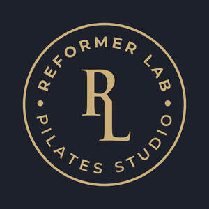

Trade Mark Journal No.2025/032 8 August 2025
UK00004241894 30 July 2025 (41)

- Class 41
- Arranging, conducting and organisation of classes, courses, workshops, seminars, tutorials, challenges, camps, retreats and training sessions relating to fitness, exercise, pilates, reformer pilates, mindfulness, body conditioning, body toning, flexibility, posture correction, strength training, weight training and physical rehabilitation; booking and reservation of exercise facilities, fitness studios, training sessions, retreats and events; conducting of fitness assessments, progress tracking and certifications; coaching, mentoring and personal training in the field of fitness, health, pilates, reformer pilates, mindfulness and rehabilitation; consultancy, information and advisory services relating to pilates instruction, physical training, fitness education, wellbeing and mindfulness; development, publication and dissemination of instructional, educational and training materials, programmes and digital resources relating to fitness, pilates, health and rehabilitation; education services relating to fitness, mindfulness, pilates, reformer pilates, physical rehabilitation, strength training, weight training, flexibility, posture alignment and wellbeing; educational information and electronic publication of content relating to physical fitness, pilates, reformer pilates, rehabilitation and mindfulness; entertainment services relating to fitness, relaxation, pilates, physical training and wellbeing; exercise class instruction and fitness advisory services; gymnasium, fitness studio, leisure centre, retreat centre and health club services; hiring and rental of exercise, pilates, reformer equipment and fitness apparatus; instruction in fitness, physical exercise, pilates, reformer pilates, mindfulness, body conditioning, flexibility and rehabilitation training; online provision of fitness, pilates, reformer pilates and mindfulness classes, videos, tutorials, webinars and interactive programmes via websites, mobile apps and online platforms; organisation of fitness events, pilates sessions, reformer challenges, retreats and community programmes; preparation, production and distribution of digital and video content, educational publications and multimedia relating to pilates, fitness and wellness; provision of fitness training, reformer pilates instruction, interactive fitness platforms, coaching programmes, training facilities and certification services; teaching and tuition in pilates, reformer pilates, physical education and rehabilitation; training consultancy and mentorship relating to fitness, exercise, pilates, reformer pilates and physical rehabilitation.
Bux & Co. Limited